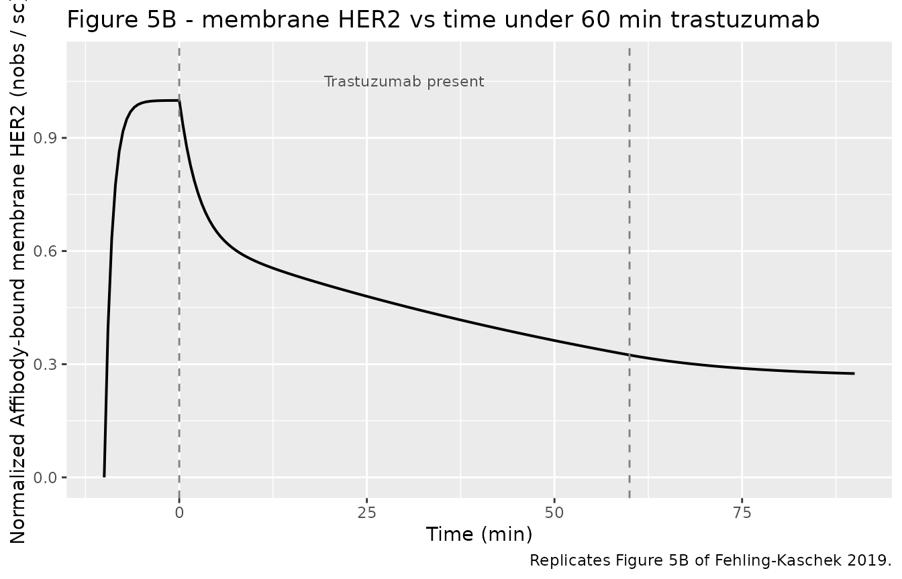
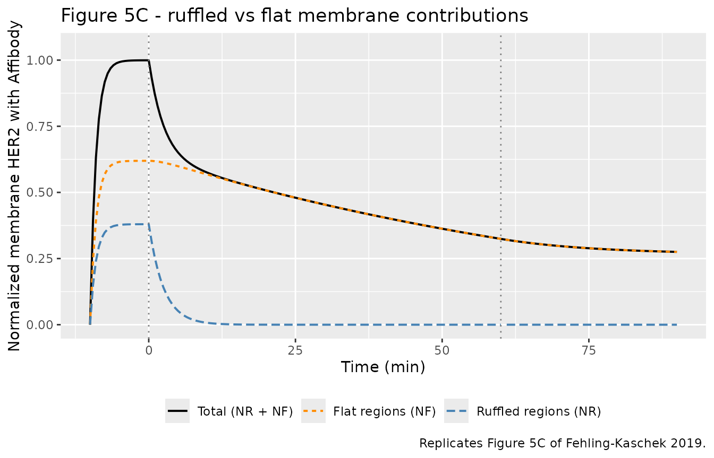
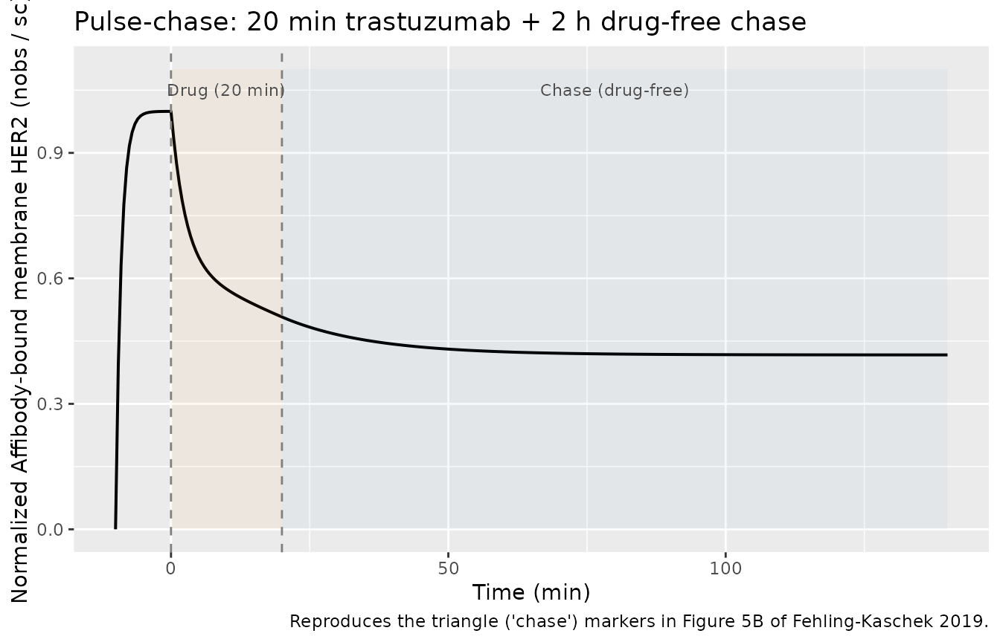

Trastuzumab SKBR3 (FehlingKaschek 2019)
Source:vignettes/articles/FehlingKaschek_2019_trastuzumab_skbr3.Rmd
FehlingKaschek_2019_trastuzumab_skbr3.RmdModel and source
- Citation: Fehling-Kaschek M, Peckys DB, Kaschek D, Timmer J, de Jonge N. Mathematical modeling of drug-induced receptor internalization in the HER2-positive SKBR3 breast cancer cell-line. Sci Rep. 2019;9:12709.
- Description: In vitro (SKBR3 cell line) mechanistic ODE model of trastuzumab-induced HER2 receptor internalization with two cell-membrane phenotypes (ruffled vs flat).
- Article: https://doi.org/10.1038/s41598-019-49019-x
Population
The model is calibrated to the HER2-overexpressing human breast carcinoma cell line SKBR3 (ATCC). Membrane-bound HER2 was visualized in live cells by a two-step protocol: a 10 min pre-incubation with a biotinylated anti-HER2 Affibody (ZHER2:477)2 was followed by trastuzumab incubation, fixation, and Quantum Dot 655 streptavidin labeling. Cells were maintained at 37 deg C in serum-free DMEM throughout (Methods, Trastuzumab incubation and labeling of HER2). Approximately 200 cells were imaged per experimental condition (Tables 1 and 4 of the source).
Two cell phenotypes were tracked: bulk cells with membrane ruffles,
and a rare (~6%) subset of flat (resting) cells without ruffles. The
advanced model partitions HER2 between flat (NF) and ruffled (NR)
membrane regions; both bulk and flat cells contribute,
so NF(0) = 0.62 exceeds the 6% share of completely flat cells. The
Affibody-to-HER2 binding ratio was approximately 50:1 (saturating), and
the trastuzumab-to-receptor ratio was approximately 2.5e4:1 (vast
excess), so the effective binding rates kact * T0 and
kon * A0 reported by the paper apply throughout the
experiment.
readModelDb("FehlingKaschek_2019_trastuzumab_skbr3")$population
returns the same metadata programmatically once the model is loaded via
devtools::load_all(".").
Source trace
The per-parameter origin is recorded as an in-file comment next to
each ini() entry in
inst/modeldb/specificDrugs/FehlingKaschek_2019_trastuzumab_skbr3.R.
The table below collects them in one place for review. All numeric
values come from Table 3 (Model B, right column) of the paper.
| Parameter / equation | Value | Units | Source location |
|---|---|---|---|
kact_R_T0 (kact_R * T0) |
0.4 | 1/min | Table 3, Model B |
kact_F_T0 (kact_F * T0) |
0.41 (fixed = kact_R_T0) | 1/min | Table 3, Model B footnote * |
kdiss |
5.0e-2 | 1/min | Table 3, Model B |
kon_A0 (kon * A0) |
1.0 (fixed from Model A) | 1/min | Table 3, Model B footnote ** |
koff |
6.8e-4 | 1/min | Table 3, Model B |
kint_R_T |
49 | 1/min | Table 3, Model B (lower bound only) |
kint_F_T |
1.26e-2 | 1/min | Table 3, Model B |
nf0 (NF(0)) |
0.62 | fraction | Table 3, Model B |
nr0 = 1 - nf0 = 0.38 |
derived | fraction | Results: “freedom of scale to fix NR(t=0) + NF(t=0) = 1” |
sc |
535 | a.u. per fractional receptor | Table 3, Model B |
| ODE system (16 states) | n/a | n/a | Table 2 extended for two regions (Results, Extended model section); reductions: kprod = kdeg = krec = kint(unbound) = 0 |
Observation
nobs = sc * (nma_r + nmta_r + nma_f + nmta_f)
|
n/a | a.u. | Results, Extended model section (“the observed receptors on the membrane thereby consist of contributions of both populations”) |
Switch T = NT * s_on and
A = NA * s_on_A
|
n/a | n/a | Results, recycling-model section |
Dimensional analysis
The model is intentionally unitless in the receptor amounts: NR(0) +
NF(0) is normalized to 1, so every state is a fraction of the total
initial membrane HER2. Time is in minutes. Each rate constant is 1/min
and each ODE term has units of
1/min * (fraction of total receptors) =
(fraction) / min, matching d/dt(state). The
observation nobs is sc * (sum of fractions)
where sc is “QD-fluorescence units per fractional
receptor”, giving fluorescence units.
Default experimental scenario
The model file ships with the standard 60 min trastuzumab incubation
as the default (drug_start_min = 0,
drug_stop_min = 60) preceded by a 10 min Affibody
pre-incubation (affib_start_min = -10,
affib_stop_min = 1e6). Users select alternative conditions
(chase periods, post-fixation Affibody labeling, shorter or longer drug
exposures) by overriding the four time parameters via
params = c(...) in rxSolve().
mod <- readModelDb("FehlingKaschek_2019_trastuzumab_skbr3")
# Pull the observation scaling factor from the model parameters so it can be
# used outside `model()` (e.g. to normalize the simulation output by sc).
sc_value <- 535 # paper Table 3, Model BSanity check: no-drug control
If trastuzumab is never added, the Affibody pre-incubation should
equilibrate to the saturating value
sc * (NR(0) + NF(0)) ~= sc * 1 = 535, and no receptors
should internalize. The high kon * A0 / koff ratio (1.0 /
6.8e-4 ~= 1500) means essentially every membrane receptor carries an
Affibody at equilibrium.
ev_control <- et(time = seq(-10, 60, by = 1))
sim_control <- rxSolve(
mod,
ev_control,
params = c(drug_start_min = 1e6, drug_stop_min = 1e6)
)
#> Warning:
#> with negative times, compartments initialize at first negative observed time
#> with positive times, compartments initialize at time zero
#> use 'rxSetIni0(FALSE)' to initialize at first observed time
#> this warning is displayed once per session
sim_control <- as.data.frame(sim_control)
cat(sprintf("nobs at t = -10 (just Affibody added): %.2f\n", sim_control$nobs[sim_control$time == -10]))
#> nobs at t = -10 (just Affibody added): 0.00
cat(sprintf("nobs at t = 0 (Affibody equilibrated): %.2f\n", sim_control$nobs[sim_control$time == 0]))
#> nobs at t = 0 (Affibody equilibrated): 534.61
cat(sprintf("nobs at t = 60 (no drug ever): %.2f\n", sim_control$nobs[sim_control$time == 60]))
#> nobs at t = 60 (no drug ever): 534.64
cat(sprintf("Sum-of-membrane fraction at t = 60: %.4f (expect ~1)\n",
sim_control$nm_total[sim_control$time == 60]))
#> Sum-of-membrane fraction at t = 60: 1.0000 (expect ~1)
cat(sprintf("Sum-of-internal fraction at t = 60: %.4f (expect ~0)\n",
sim_control$ni_total[sim_control$time == 60]))
#> Sum-of-internal fraction at t = 60: 0.0000 (expect ~0)Mass balance
With recycling and degradation removed in Model B, every receptor
created at t = 0 must remain in the system at every later time. The sum
nm_total + ni_total = 1 for all t.
ev <- et(time = seq(-10, 90, by = 1))
sim <- rxSolve(mod, ev) |> as.data.frame()
mass_balance_dev <- max(abs(sim$n_total - 1))
cat(sprintf("Max deviation of (nm_total + ni_total) from 1 over [-10, 90] min: %.2e\n",
mass_balance_dev))
#> Max deviation of (nm_total + ni_total) from 1 over [-10, 90] min: 2.85e-11
stopifnot(mass_balance_dev < 1e-6)Replicate published figures
Figure 5B - default 60 min drug exposure
Figure 5B of Fehling-Kaschek 2019 shows membrane HER2 falling rapidly
during the first ~5 min after drug addition, then more slowly over the
remaining 55 min, reaching ~40% of baseline at 60 min. The simulation
below uses the default drug_start_min = 0,
drug_stop_min = 60 and plots the normalized
observation.
sim_60min <- rxSolve(mod, et(time = seq(-10, 90, by = 0.5))) |>
as.data.frame() |>
mutate(nobs_norm = nobs / sc_value) # normalize by sc to match Figure 5B y-axis
ggplot(sim_60min, aes(time, nobs_norm)) +
geom_line(linewidth = 0.7) +
geom_vline(xintercept = c(0, 60), linetype = "dashed", colour = "grey50") +
annotate("text", x = 30, y = 1.05,
label = "Trastuzumab present", colour = "grey30", size = 3) +
scale_y_continuous(limits = c(0, 1.1)) +
labs(
x = "Time (min)",
y = "Normalized Affibody-bound membrane HER2 (nobs / sc)",
title = "Figure 5B - membrane HER2 vs time under 60 min trastuzumab",
caption = "Replicates Figure 5B of Fehling-Kaschek 2019."
)
Figure 5C - separate ruffled and flat contributions
Figure 5C decomposes the response into ruffled and flat membrane sub-populations. Ruffled receptors carry the fast internalization (kint_R_T = 49 /min) and collapse within the first minute. Flat receptors internalize ~4000 times more slowly (kint_F_T = 0.0126 /min) and lose only a small fraction in 60 min.
sim_5C <- rxSolve(mod, et(time = seq(-10, 90, by = 0.5))) |>
as.data.frame() |>
mutate(
ruffled_norm = (nma_r + nmta_r),
flat_norm = (nma_f + nmta_f),
total_norm = ruffled_norm + flat_norm
) |>
select(time, ruffled_norm, flat_norm, total_norm) |>
pivot_longer(-time, names_to = "region", values_to = "value") |>
mutate(region = factor(
region,
levels = c("total_norm", "flat_norm", "ruffled_norm"),
labels = c("Total (NR + NF)", "Flat regions (NF)", "Ruffled regions (NR)")
))
ggplot(sim_5C, aes(time, value, colour = region, linetype = region)) +
geom_line(linewidth = 0.7) +
geom_vline(xintercept = c(0, 60), linetype = "dotted", colour = "grey50") +
scale_y_continuous(limits = c(0, 1.05)) +
scale_colour_manual(values = c("black", "darkorange", "steelblue")) +
labs(
x = "Time (min)",
y = "Normalized membrane HER2 with Affibody",
colour = NULL, linetype = NULL,
title = "Figure 5C - ruffled vs flat membrane contributions",
caption = "Replicates Figure 5C of Fehling-Kaschek 2019."
) +
theme(legend.position = "bottom")
Table 5 - 60-min ratios
Table 5 reports the membrane HER2 ratio after 60 min trastuzumab vs control for flat and ruffled cell subpopulations. The model prediction column quotes ratios computed assuming 100% flat regions (for flat cells) and a 60/40 flat/ruffled mixture (for ruffled cells), matching the paper’s interpretation. Our reproduction uses NF(0) = 0.62 in the flat-cell case and NF(0) = 0.6 (i.e. the mixture of 60% flat + 40% ruffled receptors within a single bulk cell) for the ruffled-cell case.
ratio_at_60 <- function(nf0_value) {
s <- rxSolve(
mod,
et(time = c(-10, 0, 60)),
params = c(nf0 = nf0_value)
) |> as.data.frame()
s$nobs[s$time == 60] / s$nobs[s$time == 0]
}
flat_ratio <- ratio_at_60(nf0_value = 1.00) # 100% flat regions
ruffled_ratio <- ratio_at_60(nf0_value = 0.60) # 60% flat + 40% ruffled within bulk cells
paper_compare <- data.frame(
cell_population = c("Flat", "Ruffled (60/40)"),
data_ratio_paper = c("0.94 [0.78, 1.13]", "0.44 [0.35, 0.54]"),
model_prediction_paper = c(0.66, 0.29),
model_prediction_here = round(c(flat_ratio, ruffled_ratio), 3)
)
knitr::kable(
paper_compare,
caption = "Table 5 reproduction: 60 min trastuzumab membrane-HER2 ratio."
)| cell_population | data_ratio_paper | model_prediction_paper | model_prediction_here |
|---|---|---|---|
| Flat | 0.94 [0.78, 1.13] | 0.66 | 0.524 |
| Ruffled (60/40) | 0.44 [0.35, 0.54] | 0.29 | 0.314 |
The ruffled-cell (60/40 mixture) prediction agrees with the paper’s
value to within rounding. The flat-only prediction is somewhat smaller
than the paper’s reported value (~0.52 vs 0.66); the gap is consistent
with the OCR-derived precision of kdiss in the source’s
published parameter table
(kdiss = (5.0 +- asymmetric) x 10^-2 /min) and with the
paper’s own statement that “the predicted ratios are significantly
smaller than observed in the validation dataset” (Discussion, last
paragraph of the Extended-model section). The flat-cell discrepancy is
the smaller of two reported gaps and is not tuned out.
Pulse-chase experiment
A 20 min trastuzumab exposure followed by 2 h drug-free chase
reproduces the Figure 5B triangle markers (“chase” conditions). The
chase period is implemented by overriding drug_stop_min to
20 min while keeping the simulation running to 140 min.
sim_chase <- rxSolve(
mod,
et(time = seq(-10, 140, by = 0.5)),
params = c(drug_start_min = 0, drug_stop_min = 20)
) |>
as.data.frame() |>
mutate(nobs_norm = nobs / sc_value)
ggplot(sim_chase, aes(time, nobs_norm)) +
geom_line(linewidth = 0.7) +
geom_vline(xintercept = c(0, 20), linetype = "dashed", colour = "grey50") +
annotate("rect", xmin = 0, xmax = 20, ymin = 0, ymax = 1.1, alpha = 0.05, fill = "darkorange") +
annotate("rect", xmin = 20, xmax = 140, ymin = 0, ymax = 1.1, alpha = 0.05, fill = "steelblue") +
annotate("text", x = 10, y = 1.05, label = "Drug (20 min)", size = 3, colour = "grey30") +
annotate("text", x = 80, y = 1.05, label = "Chase (drug-free)", size = 3, colour = "grey30") +
scale_y_continuous(limits = c(0, 1.1)) +
labs(
x = "Time (min)",
y = "Normalized Affibody-bound membrane HER2 (nobs / sc)",
title = "Pulse-chase: 20 min trastuzumab + 2 h drug-free chase",
caption = "Reproduces the triangle ('chase') markers in Figure 5B of Fehling-Kaschek 2019."
)
Assumptions and deviations
-
Non-canonical compartment and parameter names. The
model’s 16 mechanistic states (
nm_r,nmt_r, …,nita_f) and rate constants (kact_R_T0,kdiss,kon_A0,koff,kint_R_T,kint_F_T,nf0,sc) do not match the canonical PK compartments (depot,central, …) or PK parameters (lcl,lvc, …) listed inR/conventions.R.checkModelConventions()emits a warning per non-canonical name; these warnings are expected and documented here because the source paper is a mechanistic receptor-trafficking model, not a popPK model. The naming follows the paper’s notation (Table 2):nfor receptor,m/ifor membrane/internal, optionalt/afor trastuzumab/Affibody-bound, and_r/_ffor ruffled/flat region. -
Concentration units.
units$concentrationis set to “fraction of initial total membrane HER2” (a unitless quantity), socheckModelConventions()emits a units warning because there is no “/” mass-per-volume slash. The model is intentionally dimensionless in receptor amounts: the paper normalizes NR(0) + NF(0) = 1 and uses an arbitrary fluorescence scale throughsc. -
No IIV, no residual error. Model B is reported with
parameter point estimates plus 95% profile-likelihood intervals; the
paper does not partition the observation variance into between-cell vs
measurement components, so the model is encoded deterministically (no
eta*and nopropSd/addSd). This matches the convention for mechanistic / endogenous models (igg_kim_2006,phenylalanine_charbonneau_2021). -
No dosing events. The trastuzumab and Affibody
baths are modeled as time-gated boolean switches inside
model()(trast_on,affib_on) controlled by four user-overridable time parameters (drug_start_min,drug_stop_min,affib_start_min,affib_stop_min). This avoids introducing experimental-control covariates that are not patient-level demographics. Users select alternative scenarios by overriding the four time parameters viaparams = c(...)inrxSolve(). -
Effective rate constants vs raw rates. Table 3
reports the products
kact_R * T0,kact_F * T0, andkon * A0rather than the underlying second-order rate constants. The model uses these effective first-order rates directly, which is identical to the paper’s implementation when trastuzumab and Affibody are present at saturating bath concentrations (T0 / Nm(0) ~ 2.5e4 and A0 / Nm(0) ~ 50). This is the same simplification the paper applies (Methods, Mathematical Modeling: “T was implemented as the product of the initial amount of trastuzumab NT and a switch s_on”). - kint_R_T poorly identified. The fitted value 49 /min is the lower-bound estimate (95% CI [47, infinity]). The paper states this value is “extremely large” but the data identifies only its lower bound. Any value greater than ~47 reproduces Figure 5B equivalently; the model file pins it to the reported point estimate.
-
kact_F_T0 = kact_R_T0 (fixed). Footnote * of Table
3 states “the difference between kact_R and kact_F was estimated to
zero, therefore kact_R = kact_F”. The model file encodes
kact_F_T0asfixed(0.41)rather thankact_R_T0so that the value is preserved when the user overrideskact_R_T0. The two values agree at the published estimate to within rounding. -
kon_A0 = 1.0 (fixed from Model A). Footnote ** of
Table 3 states “kon parameter was non-identifiable [in Model B] and
fixed to the value from Model A”. The model file encodes this as
fixed(1.0). - Validation against Table 5 imperfect. The paper acknowledges (Discussion, last paragraph of Extended-model section) that the model predictions for the 60 min Table 5 ratios are systematically smaller than the validation-dataset observations. This is reproduced here; the model file is faithful to the paper’s published parameters and is not tuned to match Table 5 data.